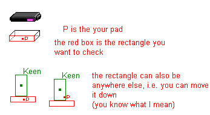

Well, I will upload build 12 to my site when I have
fixed a little bug. After having loaded a game the the engine
has got problems to draw the correct bitmaps on the
screen, i.e. a Sparky is a background tile or so.
The problem will be fixed on
Friday.
I calls those lifts pads (don't ask me why I do
that, I don't know too).
Yes, I think I can help you.
Movements:
Locator points are the right way to do the
stuff.
In fact, I had the same problem. Keen always fell
through a pad. I have almost gone mad.
But then I thought way not handling them as if they
were platforms.
I think you have a detection routine in your
program that decides wether Keen falls or stands on a platform?
Now the important part: A "pad detection routine" (
which should be within the detection routine for platforms)
You have to think of a rectangle that describes the
pad:

Now you need a new variable ( KeenOnPad or so ) and
asign the value -1 which tells the game
that Keen doesn't stand on a pad.
Now check if Keen's feet are within one of
the rectangles (I don't know how many pads you use, should be done with a
simple for loop).
If so asign the pad number (index of the array) to
KeenOnPad and leave the pad detection routine.
Then the game knows that Keen is on pad number
KeenOnPad.
Now deal with pad detection as if
Keen would be on a platform.
Movements:
That's easy if KeenOnPad is not equal to
-1
The direction of the pad is the same direction in
which Keen is moved.
You move the pad Keen is on 2 up, so you just move
Keen 2 up.
This should work fine! Hopefully, nobody's
perfect.
If something goes wrong tell me and I try my best
to fix the problem.
It took me some time to perfect the pad
thing.
Oliver